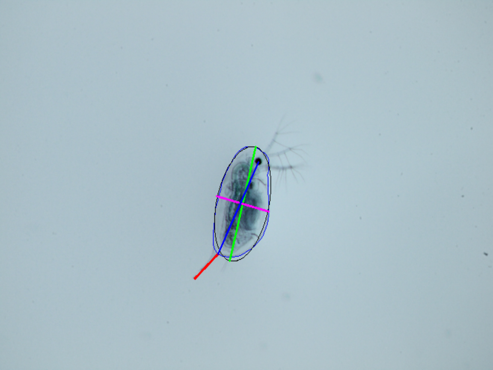

Measure single images
measure_single_image.RmdThis article explains how to measure single images of daphnia to produce a list containing several measurements and plot these measurements onto the image.
1. Load the package
library(daphniaruler)
#> Trying to find python and conda
#> Trying to find conda environment 'daphniaRuler'
#> Activating conda environment 'daphniaruler'
#> done... have funThere should be no error messages when loading the package. In case
you experience issues see:
https://nelstevens.github.io/daphniaRuler/articles/installation_issues.html
2. run measure_image
Run the function measure_image. this function requires a single argument, which is the path to the image. This path can be either absolute or relative. The function also comes with three optional arguments:
- find_eye
- plot_image
- scaling_factor
find_eye expects a logical value (either TRUE or FALSE). When TRUE
the package will try to detect the eye of a daphnia within the image. If
successful the will be measurement from the eye to the base of the tail
and additionally a line from the base of the tail to the tip of the
tail. This should be the most accurate way the measure body size in
daphnia.
plot_image also expects a logical value (either TRUE or FALSE). When
TRUE the function will create a plot of the image with the measurements
plotted over the image. Note that this feature might only work when
using rstudio.
scaling_factor expect a numeric input. It describes how many pixels
occur in one unit of length. for example if 100 pixels correspond to 1mm
then the scaling_factor would be 100. You can calculate the scaling
factor with image analysis tools such as imageJ. If scaling_factor is
NULL all measurement outputs will correspond to pixels (no scaling
performed). Here’s an example what the function produces when having all
optional arguments set to default values (I’m disabling the output of
the image array due to space constraints):
out <- measure_image(
"../inst/sample_images/example1.JPG",
find_eye = TRUE,
plot_image = TRUE,
scaling_factor = NULL
)
out[names(out) != "image"]
#> $ID
#> [1] "sample_images/example1.JPG"
#>
#> $perimeter
#> [1] 1038.189
#>
#> $area
#> [1] 65656.89
#>
#> $minor
#> [1] 207.7907
#>
#> $solidity
#> [1] 0.9856945
#>
#> $full.Length
#> [1] 406.9933
#>
#> $tail.Length
#> [1] 124.5079
#>
#> $eye.Length
#> [1] 354.1952
#>
#> $tail.angle
#> [1] 159.6364What should the image look like
The image ideally only contains a single individual. if other individuals are also present in the image only the largest individual will be measured. For optimal results try to make the image as sharp as possible. Especially the outline of the specimen should be clearly visible.
Note on output images
Output images with measurements plotted over will be rescaled to 720*480p in order to save memory. However measurement outputs with scaling_factor = NULL will correspond to pixels in the original image. Thus measuring the drawn lines on output images with an image analysis tool such as imageJ will show differing results.